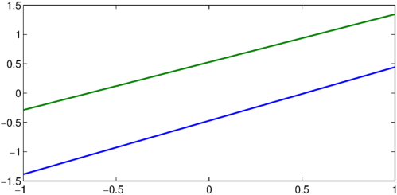
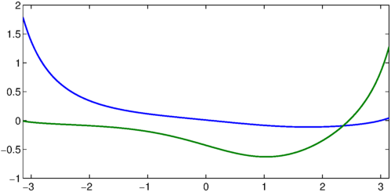
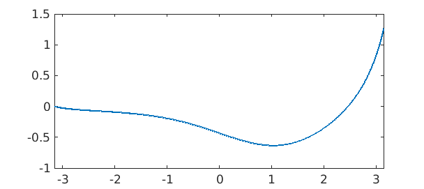
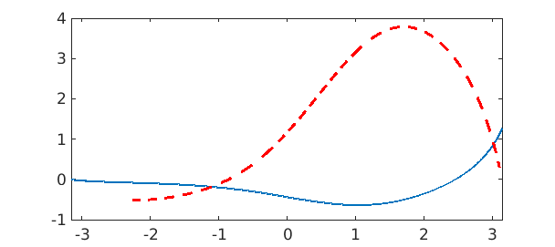
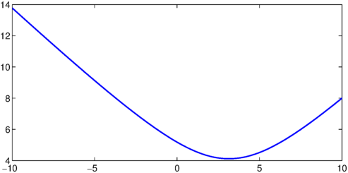
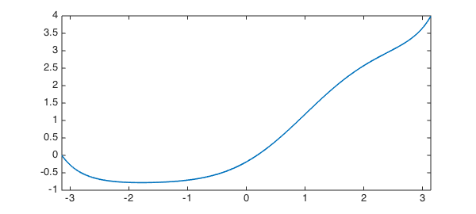
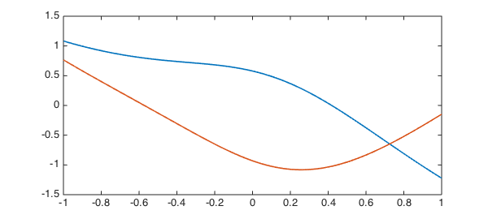

We've recently introduced some new functionality in Chebfun for computing the nullspace of differential operators. Let's explore this with a couple of simple examples.
1. Simple example #1
Let's start as simply as we can, and take
$$ (Lu)(x) := u''(x), \quad x\in [-1, 1]. $$
L = chebop(@(u) diff(u, 2));
Clearly the nullspace of this operator -- that is, the space of functions $v$ for which $L(v)=0$ -- is spanned the two functions
v = [1, chebfun('x')];
norm(L(v))
ans =
0
Supposing we didn't know this, we could compute a basis for the nullspace with the null method:
LW = 'LineWidth'; lw = 1.6; V = null(L) plot(V, LW, lw) V'*V norm(L(V))
V =
chebfun column1 (1 smooth piece)
interval length endpoint values
[ -1, 1] 4 -1.4 0.44
Epslevel = 4.009500e-16. Vscale = 1.384490e+00.
chebfun column2 (1 smooth piece)
interval length endpoint values
[ -1, 1] 4 -0.29 1.3
Epslevel = 4.132711e-16. Vscale = 1.343214e+00.
ans =
1.000000000000000 -0.000000000000000
-0.000000000000000 1.000000000000000
ans =
2.644251170154956e-13

where we find that $V^T V = I$ and $LV \approx 0$ as required.
Clearly V doesn't correspond directly to $1$ and $x$, since there is some freedom in how we orthogonalise the basis. However, we can check that V and ${1, x}$ correspond to the same spaces by computing the angle between the spaces with the subspace command.
subspace(v, V)
ans =
1.385544576431027e-14
2. Incomplete boundary conditions
Now let's consider the more complicated 2nd-order operator
$$ Lu = u'' + 0.1x(1-x^2)u' + \sin(x)u, \quad x\in [-\pi, \pi]. \qquad (*) $$
dom = [-pi, pi]; L = chebop(@(x, u) diff(u, 2) + .1*x.*(1-x.^2).*diff(u) + sin(x).*u, dom);
As before, it has a nullspace of rank 2.
V = null(L) plot(V, LW, lw) V'*V norm(L(V))
V =
chebfun column1 (1 smooth piece)
interval length endpoint values
[ -3.1, 3.1] 64 1.8 0.043
Epslevel = 1.753455e-16. Vscale = 1.786120e+00.
chebfun column2 (1 smooth piece)
interval length endpoint values
[ -3.1, 3.1] 64 -0.011 1.3
Epslevel = 2.468482e-16. Vscale = 1.268748e+00.
ans =
0.999999999999998 0.000000000000000
0.000000000000000 1.000000000000000
ans =
3.096261776816828e-11

However, now suppose we impose one boundary condition, say, a Dirichlet condition at the left. This removes one degree of freedom, and we are left with a rank 1 nullspace.
L.lbc = 0; L.rbc = []; v = null(L) plot(v, LW, lw), shg v'*v norm(L(v))
v =
chebfun column (1 smooth piece)
interval length endpoint values
[ -3.1, 3.1] 64 -1.7e-16 1.3
Epslevel = 1.708133e-15. Vscale = 1.268983e+00.
ans =
1.000000000000000
ans =
1.427155766422003e-11

Clearly this null vector must satisfy the given condition $v(-\pi) = 0.$
v(-pi)
ans =
-1.665334536937735e-16
3. An application
Where might these ideas be useful? Well, suppose we were interested in equation $(*)$ with a homogeneous Dirichlet condition at the left, and wanted to know what inhomogeneous Dirichlet condition gave the minimal 2-norm of the solution to $Lu = 1$. Rather than solving the linear system for a number of different boundary conditions (which would be computationally expensive) we could simply solve for one, say again a homogeneous Dirichlet condition,
L.rbc = 0; u = L\1; hold on, plot(u, '--r', LW, lw), hold off

and compute the rest by adding a scalar multiple of the null-function $v$.
E = chebfun(@(c) norm(u + c*v, 2), [-10, 10], 'vectorize', 'splitting', 'on'); plot(E,LW,lw)

We compute the 2-norm as a chebfun in the unknown variable $c$, which we can then minimise to obtain the minimal energy solution
[minE, c_star] = min(E) u_star = u + c_star*v plot(u_star,LW,lw)
minE =
4.121950420615883
c_star =
3.143771420957320
u_star =
chebfun column (1 smooth piece)
interval length endpoint values
[ -3.1, 3.1] 64 -4e-15 4
Epslevel = 1.776357e-15. Vscale = 3.989391e+00.

So the condition we require is that $u(\pi)$ = bc_star, where
bc_star = u_star(pi)
bc_star = 3.989391428267542
4. Exotic constraints
The Chebfun null function can also handle the more exotic types of boundary conditions that can be imposed in Chebfun (see [1]). For example, suppose we wish to compute the nullspace of the 3rd-order piecewise-smoooth ODE
$$ Lu := 0.1u''' + \sin(x)u'' + u, \quad x\in[-1,1] $$
with the 'boundary' condition
$$ \int(u) = u(0). $$
dom = [-1, 1]; L = chebop(@(x, u) .1*diff(u, 3) + sin(x).*diff(u, 2) + u, dom); L.bc = @(x, u) sum(u) - u(0);
Here null has no problems!
V = null(L) plot(V, LW, lw), shg V'*V
V =
chebfun column1 (1 smooth piece)
interval length endpoint values
[ -1, 1] 64 1.1 -1.2
Epslevel = 2.269192e-16. Vscale = 1.223148e+00.
chebfun column2 (1 smooth piece)
interval length endpoint values
[ -1, 1] 64 0.77 -0.15
Epslevel = 2.567754e-16. Vscale = 1.080928e+00.
ans =
1.000000000000000 -0.000000000000000
-0.000000000000000 1.000000000000001

sum(V) - V(0,:) norm(L(V), 1)
ans =
1.0e-15 *
-0.111022302462516 0.666133814775094
ans =
9.372923955371351e-09
5. References
- Chebfun Example ode-linear/NonstandardBCs